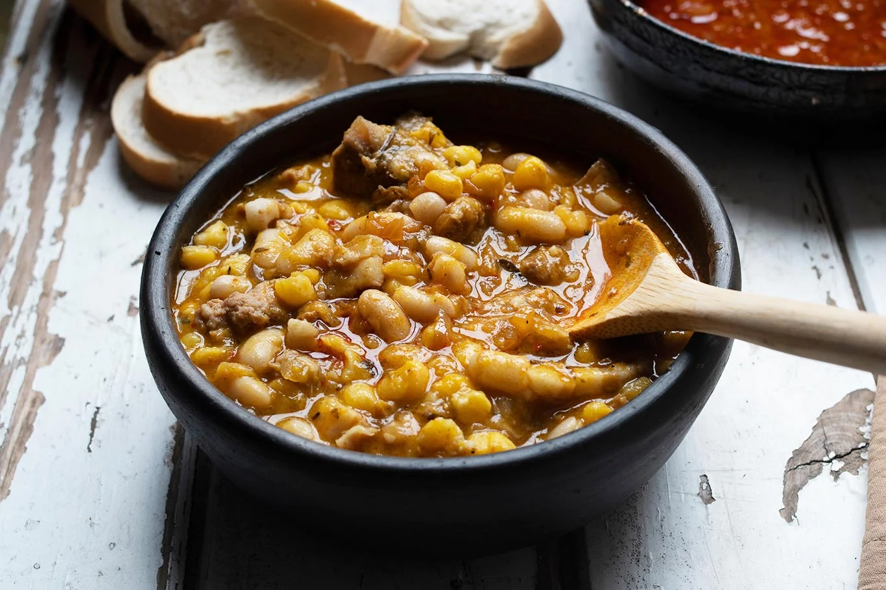

Locro Criollo
El locro es un guiso espeso lleno de historia y tradición. Se prepara lentamente con maíz, zapallo y distintas carnes.
Autor
Gerónimo Gómez

Amante de la cocina criolla y las tradiciones argentinas. Inspirado por los domingos en familia y el sabor único del asado a la parrilla.
Ingredientes
Para el Locro
- 500 g de maíz blanco partido
- 200 g de porotos
- 500 g de zapallo
- Carne, chorizo colorado y panceta
- Sal, pimentón y ají
Receta
- Remojar el maíz y los porotos desde la noche anterior.
- En una olla grande, cocinar el maíz con agua hasta que ablande.
- Agregar los porotos y el zapallo en cubos.
- Incorporar las carnes cortadas y la panceta.
- Condimentar con pimentón y ají molido.
- Dejar cocinar lentamente por al menos 2 horas hasta lograr una textura cremosa.
- Servir bien caliente, idealmente con una salsa picante aparte.
Califica esta receta y deja tu opinión
Selecciona una calificación